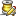

Trigger Action Types |
Symbol:
Starts recording any of
With the "Reset" check box, you can choose whether the previously recorded CPU data should be cleared or not.
With the "Reset" check box, you can choose whether the previously recorded allocation data should be cleared or not.
With the "Reset" check boxes for CPU data and allocation data, you can choose whether the previously recorded data should be cleared or not.
Symbol:
Stops recording any of
Symbol:
Starts recording monitor data. The monitor views that show historical data receive new data when this action is executed. Please note that monitor recording adds a memory overhead that grows linearly in time. You should execute the "stop monitor recording" action at some point.
In the configuration, you can define blocking and waiting thresholds for monitor recording. These settings are the same as those in the monitor history view settings dialog.
Symbol:
Stops recording monitor data.
Symbol:
Starts recording call traces. The call tracer view will receive new data once the "stop call tracer" action is executed. Please note that call traces use a lot of memory. You should execute the "stop call tracer" action after a short time.
In the configuration, you can define a cap on the number of recorded call traces and determine if calls into filtered classes should be traced as well. These settings are the same as those in the call tracer view settings dialog.
In addition, you can specify if previously recorded call traces should be reset or not. If you do not clear previously recorded call traces, you can build up call traces over several trigger events.
Symbol:
Stops recording call traces. The call tracer view will be updated with the recorded data as soon as this action is executed.
Symbol:
With this action you can trigger a heap dump as in the heap walker. Accordingly, you can select whether to
Symbol:
With this action you can trigger a thread dump as in the thread dumps view. Please note that frequently taking thread dumps will cause a linear growth in memory overhead.
Symbol:
With this action you can start probe recording for a single selected built-in probe. Probes that do not have the "record at startup" option selected in the session settings can be started this way
Symbol:
With this action you can stop probe recording for a single selected built-in probe. If probe recording should only be done for a specific use case, you can use this action to switch off recording.
Symbol:
With this action you can start probe tracking for a single selected built-in probe and one or more control objects or hot spots.
Symbol:
With this action you can stop probe tracking for a single selected built-in probe and one or more control objects or hot spots. This only has an effect if you have executed the Start probe tracking" action first.
Symbol: 
With this action you can save a JProfiler snapshot of all profiling data to disk.
In addition to the name of the snapshot file you can specify whether a number should be appended to the file name to prevent old snapshot files from being overwritten. Note that the path is relative to the working directory of the profiled JVM and that the snapshot is saved on the remote machine if you profile remotely.
Symbol:
Requirements: Java 1.6+
With this action you can save an HPROF heap snapshot of all profiling data to disk. For the "Out of memory exception" event type, this is the only supported action.
In addition to the name of the snapshot file you can specify whether a number should be appended to the file name to prevent old snapshot files from being overwritten. Note that the path is relative to the working directory of the profiled JVM and that the snapshot is saved on the remote machine if you profile remotely.
HPROF heap dumps also offer the option to only save referenced objects.
Symbol: 
For event types that have a duration, such as the method invocation event or the threshold events, you can use this action to execute some actions not at the start of the event but rather after the event is finished.
Symbol: 
This action is only available for the method invocation event type and allows you to change the thread status for the duration of the methods that are associated the the trigger. The thread status is configurable.
Symbol: 
This action is only available for the method invocation event type and allows you print details about the current method invocation including parameters and return value to the output stream configured in the trigger output options.
Symbol:
This action is only available for the method invocation event type and allows you to invoke an interceptor when the methods associated the the trigger are invoked. Interceptors can be developed with the JProfiler API and can also be added with VM parameters. Please see the api directory for documentation and samples. The advantage of adding the interceptor with a trigger is that you do not have to specify the methods and signatures in the interceptor class.
You can enter the interceptor class manually or use the [...] button to scan the class path
configured in the application settings
for all classes extending com.jprofiler.api.agent.interceptor.Interceptor.
Symbol:
With this action you can add a boookmark to the time-resolved views. You have to enter a description for the bookmark.
Symbol:
With this action, you can sleep a specified amount of time until the next action in the list is executed. Please note that this does not block the current thread in the JVM. For example, you can use this action to start CPU recording, record 10 minutes, stop CPU recording and save a snapshot.
Symbol:
With his action you can print an arbitrary message to the output stream configured in the trigger output options.